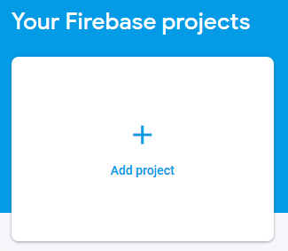
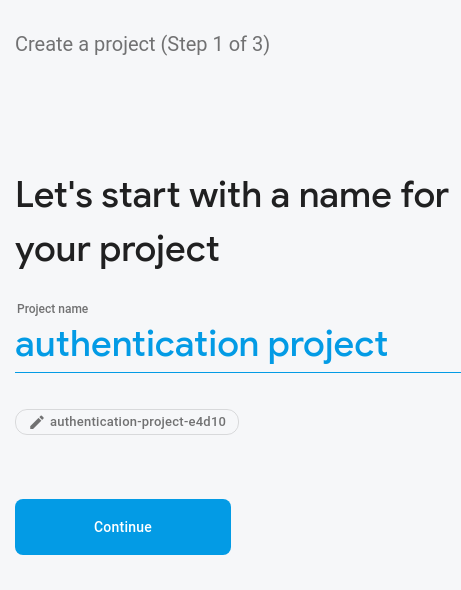
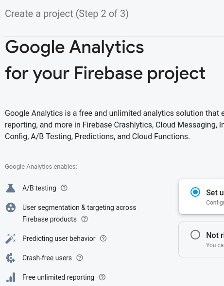
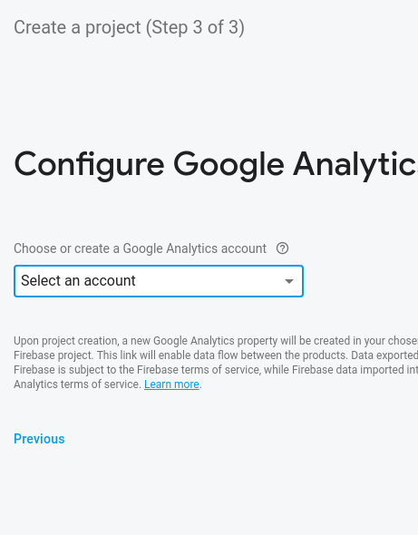
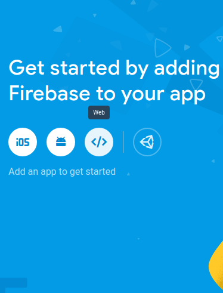
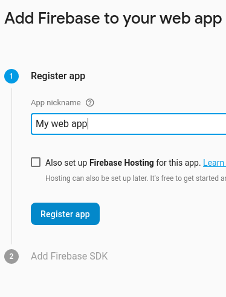
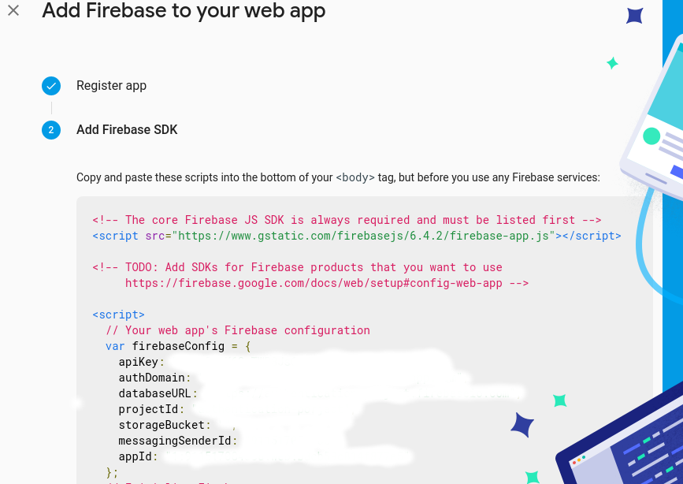
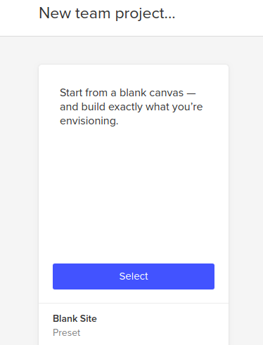
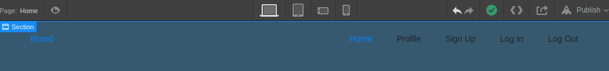

Set up user authentication with Webflow & Firebase
Learn how to configure a custom user authentication in webflow using
Firebase
Firebase
User uathentication is one of the most vital and significative security features to run a production server.
We will focus on the following 3 main feautures for our user authentication
- 1. Users will have the option to create an account.
- 2. Users will be able to log in and log out.
- 3. Users will be able to edit their profile information within their profile page.
alright, let's begin!
Set up Firebase
1. Log in to https://console.firebase.google.com with your google accout and select Add project.
2. Follow "create project" steps and fill out required fields.

3. Add Firebase to your app by clicking web and follow steps.

4. Copy script from config and save it somewhere for later use.
Set up Webflow site
1. Create Webflow porject and choose a blank site.
2. Create a navbar, with in the navbar create 5 navlinks (Home, Profile, Sing Up, Log In, Log Out). Make the navbar a symbol to be reused.
More to come..